| データ解析のための統計モデリング入門 |
| データ解析のための統計モデリング入門 |
y：種子数
x：個体の体サイズ1
f：施肥処理（統制群 C or 実験群 T）
> d <- read.csv("data3a.csv")
> head(d,n=5)
y x f
1 6 8.31 C
2 6 9.44 C
3 6 9.50 C
4 12 9.07 C
5 10 10.16 C
平均種子数が個体ごとに異なり、それが体サイズだけに依存すると考える（施肥処理はとりあえず無視する）。
その上で、モデルを
| 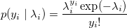 | (3.1) |
ただし、
| 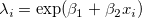 | (3.2) |
とする。 つまり、平均種子数はリンク関数と線形予測子を用いて
| 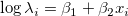 | (3.3) |
と表せる。
平均を 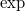 でモデル化しておけば、非負となり都合が良い。
要因の効果が積で表される。
対数リンク関数：ポアソン回帰
ロジットリンク関数：ロジスティック回帰
モデルの対数尤度は、
| 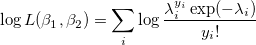 | (3.4) |
となる。
glm() 関数でポアソン分布を指定2。 正式には family=poisson(link="log") と指定しなくてはいけないが、ポアソン分布を指定した場合はデフォルトで対数リンク関数が用いられる。
> fit <- glm(y~x, data=d, family=poisson)
> summary(fit)
Call:
glm(formula = y ~ x, family = poisson, data = d)
Deviance Residuals:
Min 1Q Median 3Q Max
-2.3679 -0.7348 -0.1775 0.6987 2.3760
Coefficients:
Estimate Std. Error z value Pr(>|z|)
(Intercept) 1.29172 0.36369 3.552 0.000383 ***
x 0.07566 0.03560 2.125 0.033580 *
---
Signif. codes: 0 ‘***’ 0.001 ‘**’ 0.01 ‘*’ 0.05 ‘.’ 0.1 ‘ ’ 1
(Dispersion parameter for poisson family taken to be 1)
Null deviance: 89.507 on 99 degrees of freedom
Residual deviance: 84.993 on 98 degrees of freedom
AIC: 474.77
Number of Fisher Scoring iterations: 4
fit の中身は、names(fit) や str(fit) で見られる。後者の方が詳細。
z value はWald統計量で、最尤推定値 / SE。
パラメータ値が最尤推定値となっているときの対数尤度。
> logLik(fit) 'log Lik.' -235.3863 (df=2)
個体のサイズ 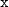 と施肥処理 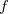 を説明変数とすると、モデルは
| 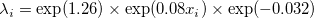 |
と推測される。
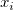 が  増えると、
増えると、 は 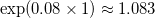 倍に増える。
は 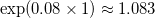 倍に増える。
肥料をやることで種子数の平均が 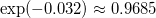 倍になる。
データと予測値のプロットを表したものが図 3.8。 この図では分かりにくいが、2つの曲線の幅は、右に行くほど広くなっている。
![\includegraphics[width=10cm]{fig0308.png}](images/img-0016.png)
本書は、変数変換によってではなく  の構造に合わせて適切な確率分布を選んでモデリングを行うという方針をとる。
の構造に合わせて適切な確率分布を選んでモデリングを行うという方針をとる。
Footnotes
| データ解析のための統計モデリング入門 |